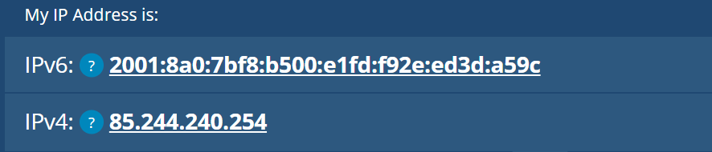
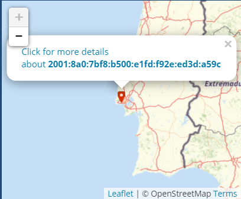
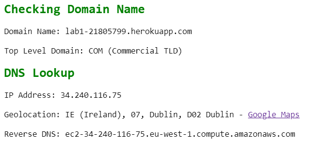
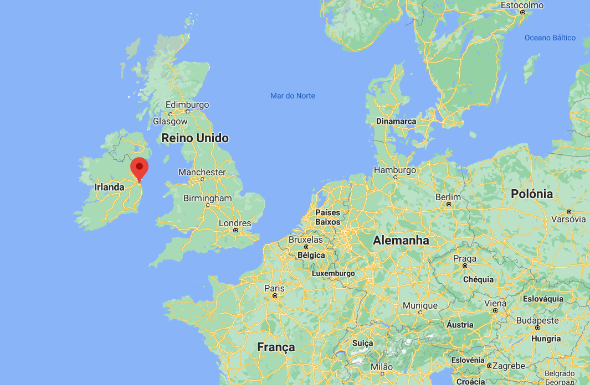
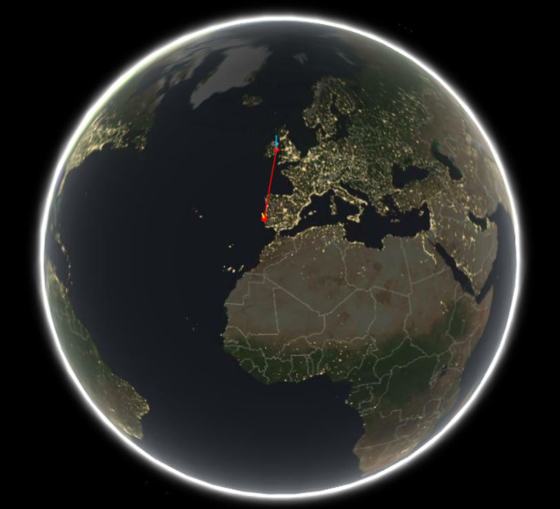
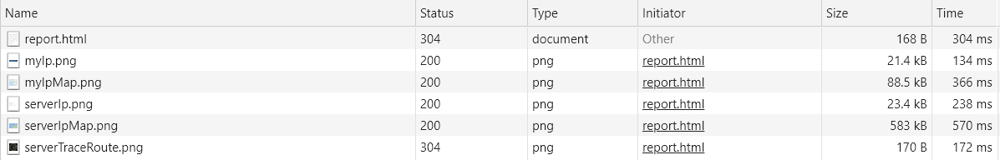

Programação Web
Na primeira aula prática de Programação Web iremos resolver a primeira ficha de Laboratório (Laboratório 1) e abordaremos os princípios básicos associados ao desenvolvimento de uma página Web.
Vamos realizar várias tarefas, tais como:
- Obter informação sobre o meu IP
- Obter informação sobre o IP do servidor Heroku onde está a minha app
- Usar a ferramenta GeoTraceroute para visualizar graficamente por onde passam os pacotes IP, até chegar ao meu servidor Heroku
- Analisar os ficheiros descarregados pelo browser, usando o browser developer tool
- Por fim, realizar esta mesma página que está a ser visualizada contendo o que foi observado nos últimos pontos
Obter informação sobre o meu IP
Em baixo está o meu ip e um pequeno map usando a ferramenta whatIsMyIpAdress:


Obter informação sobre o IP do servidor Heroku onde está a minha app
Em baixo está o ip do servidor Heroku onde está a minha app e a sua localização:


Visualizar por onde passam os pacotes IP, até chegar ao meu servidor Heroku

Analisar os ficheiros descarregados pelo browser, usando o browser developer tool
